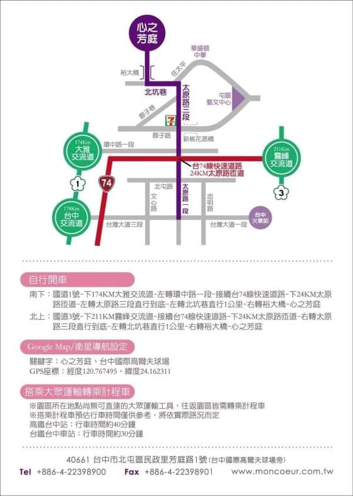

地點：台中心之芳庭
【自行開車】
1. 北上：國道三號→下211KM霧峰交流道→接續台74線快速道路→下24KM太原路匝道→右轉太原路三段直行到底→左轉北坑巷直行1公里→右轉裕大橋即可抵達心之芳庭。
2. 南下：國道一號→下174KM大雅交流道→左轉環中路一段→接續台74線快速道路→下24KM太原路匝道→右轉太原路三段直行到底→左轉北坑巷直行1公里→右轉裕大橋即可抵達心之芳庭。
【大眾運輸轉乘計程車】
台鐵台中車站：行車時間約三十分鐘
高鐵台中站：行車時間約四十分鐘
【巴士接送服務】
9:00高鐵台中站統一集合出發：行車時間約四十~五十分鐘，送客後會原車回台中高鐵站
